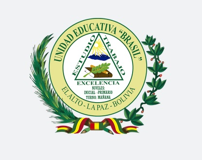

|  |
MISION
Formar de manera integral a todos los niños de la Unidad Educativa en las dimensiones del ser, hacer, saber y decidir sean estos de transformación económica social y política a través de autocriticas, críticas y reflexiones constructivas respetando la intra e inter cultural y plurilingüe del Estado Plurinacional de Bolivia.
VISION
Proporcionar una formación integral y de calidad en la vida y para la vida tomando en cuenta las nuevas corrientes pedagógicas en el contexto plurinacional e intercultural bilingüe y sean sujetos productores de bienes tangibles e intangibles.
Proyecto Sociocomunitario 2016
“Juntos por una comunidad limpia y saludable en la Unidad Educativa Brasil”.
FILOSOFÍA
Promover una formación integral de nuestros estudiantes, desarrollando potencialidades, capacidades físicas, intelectuales, afectivas, culturales, artísticas, deportivas, creativas, fortaleciendo la conciencia social crítica y reflexiva en la vida, que vincule la teoría con la practica productiva, orientada a la formación individual y colectiva, con valores y principios éticos, morales, con docentes comprometidos con vocación de servicio a la educación promoviendo una planificación e innovación permanente para elevar la calidad en el proceso educativo.
Ubicación Geográfica
La Unidad Educativa está ubicada en Av. Cuzco, Zona Brasil, a unos pasos de Extranca de Rio Seco, Distrito 4 de El alto Norte.
Dependiente de la Dirección Distrital de El Alto 1, de la Dirección Departamental de Educación La Paz- Bolivia.
Autor: Univ. Jose Leonardo Maje Alvarez